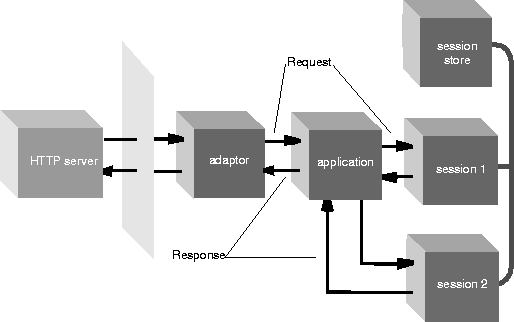

Table of Contents
Table of Contents
 Previous Section
Previous Section
In WebObjects sessions are periods during which one user is accessing the application. An application can have multiple concurrent sessions. The objects dedicated to session management ensure that state with session-wide scope persists between cycles of the request-response loop.
When a user makes an initial request to a WebObjects application, the application creates a session object (WOSession). At the end of the request-response cycle, the application stores the state-bearing session object using the facilities of WOSessionStore. With each subsequent cycle of the request-response loop for that user, the application restores the state of the session at the beginning of the cycle and stores it again at the end of the cycle.

- - WOSession
- Encapsulates the state of a session. WOSession objects persist between the cycles of the request-response loop (or transactions) that occur while a user is accessing a WebObjects application. WOSession objects store (and restore) the pages of a session, the values of session variables, and any other state that components want to persist throughout a session. The number of pages stored by the session object is dependent on the page-cache size set in WOApplication. Each session object is identified by a unique session ID, which is reflected in the URL.
- - WOSessionStore
- Provides the strategy or mechanism through which WOSession objects are made persistent. An WOSessionStore object stores WOSessions in the server or in the page (which can include Netscape cookies), and restores them upon request by the application.
Table of Contents
 Next Section
Next Section